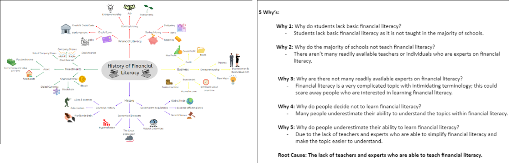

...
Analyzing Our Viewers
Listed below is the analysis of the survey we conducted

After identifying our research topic and creating a methodology on how we plan to study this, we chose three content types that would best fit our topic, and these are Educational Videos, On-demand Audio Podcast, and Educational Live Stream. Once we were done choosing, we proceeded on conducting the survey. Below are the results of our respondents' choice between our three chosen content types.
Additionally, Through conducting a survey, our team was able to gather and analyze the demographic data of our target viewers, which is them. By doing this, our team was able to properly comprehend and analyze our chosen content types of streaming that are seen by different types of people; the respondents to our survey, and identify their needs (can be seen below).
Beliefs and Opinions on the topic
Attitude on the topic
literacy will help them plan for their future and define their life goals.
In conclusion of our survey, our streaming type would be Educational Videos about Financial Literacy and will be uploaded using the streaming platforms, Facebook and YouTube.
Analysis of the Needs of our Viewers

This is one of the most important parts if you want to become a streamer; you need to identify your viewers needs in your content type and content or topic itself. As for our group, we used 2 different techniques from "design thinking: emphatize stage" to identify their needs. By using the first method, 5 whys, we identified the root cause of lack of financial literacy to students; which is the lack of teachers and experts who are able to teach financial literacy. Additionally, our team conducted a survey (also used in getting the demographics of viewers part) and 76 people preferred watching educational videos, compared to on-demand podcasts and educational live streams, on the topic of Financial Literacy. Within this survey, we applied the Design Thinking Process through empathizing with our participants by asking them what qualities they look for in a successful educational video; or the aspects needed to make an educational video strong and truly informative (Conducting Interviews with Empathy).
With this, our team identified that the viewers needs to see quality information, interesting topics, clear voice-overs, simple translations of the topic, and the video appearance of the speaker. The other aspects will also be present, but not as prioritized due to the number of participants who decided to include them in their choice. In addition to this are:
- The audience needs useful, valuable, and relevant information.
- The audience needs simple explanations or translations of the topic.
- The audience needs captivating material.
- The audience needs clear and understandable voiceovers.
- The audience needs to know the importance of Financial Literacy.
- The audience needs to understand various financial terms.
- The audience needs to know how to save, budget, and manage their money effectively.